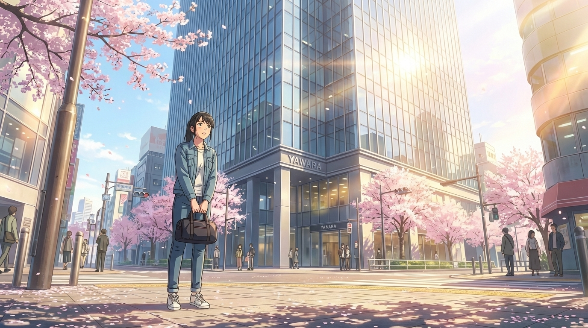
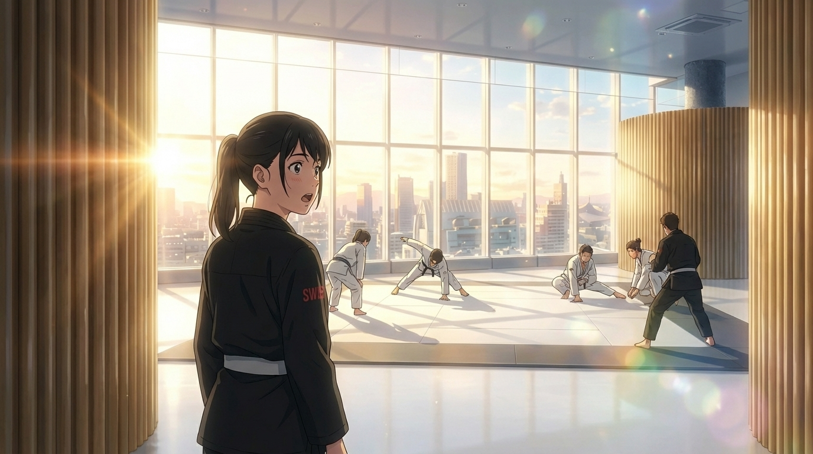
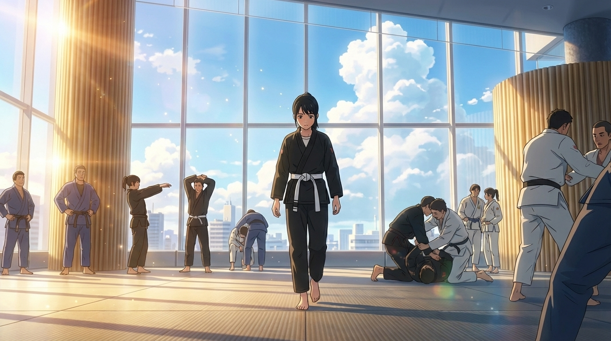
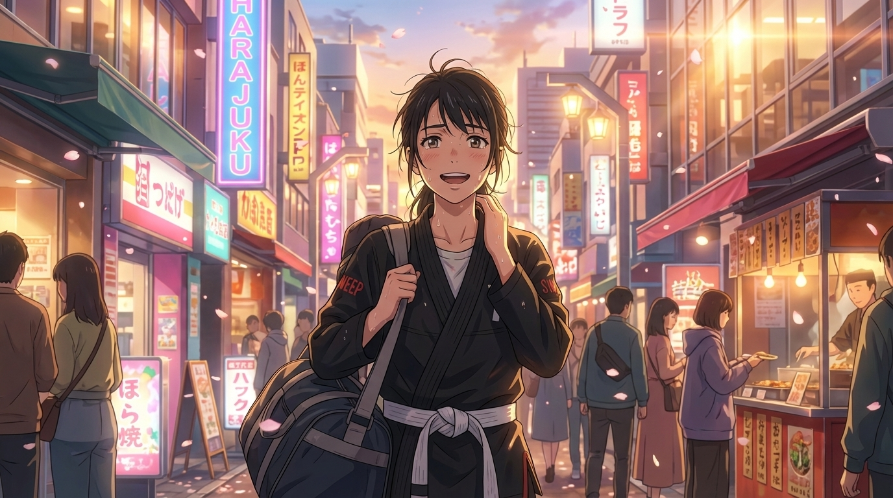

EPISODE 01
胸の上で
息が詰まる
それ恋じゃなく柔術でした
▼ scroll
渋谷のカウンター席。金曜の夜。
半分残ったビールが、蛍光灯の光を反射している。
スマホの画面が、まだ光っている。
「ごめん、もう会えない」
たった12文字。3年が、12文字で終わった。
傘を差しながら、ユカに電話をかけた。
美咲
ユカ、振られた。笑える。金曜の夜に振られた。
ユカ
……明日、空いてる？
行きたいところがあるんだけど。
美咲
……どこ？
ユカ
原宿。
— 翌朝 —

原宿のビルの前で、美咲は見上げた。
ユカが言ってた「元気が出る場所」って、ヨガスタジオかと思ってた。
ユカ（LINE）
8階まで上がって！ 受付で「体験」って言えばOK！
……8階？
エレベーターの数字が上がっていく。
6… 7… 8。
鏡に映る自分は、昨日泣いた顔をしている。
……何しに来たんだろう。
チン

ドアが開いた瞬間、息を飲んだ。
東京の空が、足元まで広がっていた。
白い床。木のパーティション。パノラマの窓。
朝の光が、空間を金色に染めている。
……ヨガスタジオじゃない。
でも、なんだろう。ここ。
白い道着を着た人たちが、マットの上で絡み合っている。
……絡み合っている？
村田
体験の方ですか？ ようこそ。
村田です。よろしくお願いします。
——え。
この人が、先生？
想像と違う。全然違う。
美咲
あ、藤崎です。あの、友達に連れてこられて……
柔術って、何ですか？
村田
（笑って）
体で覚えた方が早いです。着替えましょう。
更衣室の鏡の前で、黒い道着を着た。
白い帯を、見よう見まねで結ぶ。
……なんだろう。
昨日まで着ていたオフィスの服より、
こっちの方がしっくりくる気がする。
……気のせいか。

裸足でマットに立った。
足の裏が、冷たくて、少し柔らかい。
村田
じゃあ、まず組んでみましょう。
力はいりません。呼吸だけ意識して。
— スパーリング —
ドサッ
3秒で倒された。
何が起きたかわからない。
気づいたら、相手の体重が胸の上にある。
——息が、詰まる。
動けない。
手も、足も、全部押さえられてる。
マットに押し付けられた頬から、世界が横倒しに見える。
パノラマ窓の向こうで、東京が光っている。
——でも。
なんだろう、これ。
昨日の夜より、ずっと息が詰まってるのに。
昨日の夜より、ずっと——生きてる気がする。
練習相手
大丈夫？ 苦しかったらタップしてね。
ここ、叩けばいいから。
言われるがまま、手のひらでマットを叩いた。
tap, tap, tap
「参りました」の合図。
……生まれて初めて、負けを認めた。
意外と、嫌じゃなかった。
— 帰り道 —

竹下通りを歩きながら、首を触った。
さっき絞められた場所が、まだ少し熱い。
何が楽しかったんだろう。
ボコボコにされただけなのに。
全身痛いし、汗だくだし、髪ぐちゃぐちゃだし。
……なのに、笑ってる。
昨日の夜から、初めて笑ってる。
道着バッグが、肩に食い込む。
その重さが、なぜか心地いい。
家に帰って、シャワーを浴びて、ベッドに座った。
スマホを開く。
昨日までは、彼のLINEを何度も見返していた。
今日は、違う画面を見ている。
「YAWARA — 明日のクラス」
予約ボタンに指を乗せた。
——もう一回、あの場所に行きたい。
胸の上で息が詰まるあの感覚を、
もう一回、味わいたい。
tap
予約完了。
🥋
第1話「胸の上で息が詰まる」
次回 — 第2話「手首つかまれて」
初めてのスパーリング。負けて、負けて、負けて。
でも帰り道、なぜかまた笑っている。
🎵 MV「それ恋じゃなく柔術でした」を聴く
Share on X
← MV一覧